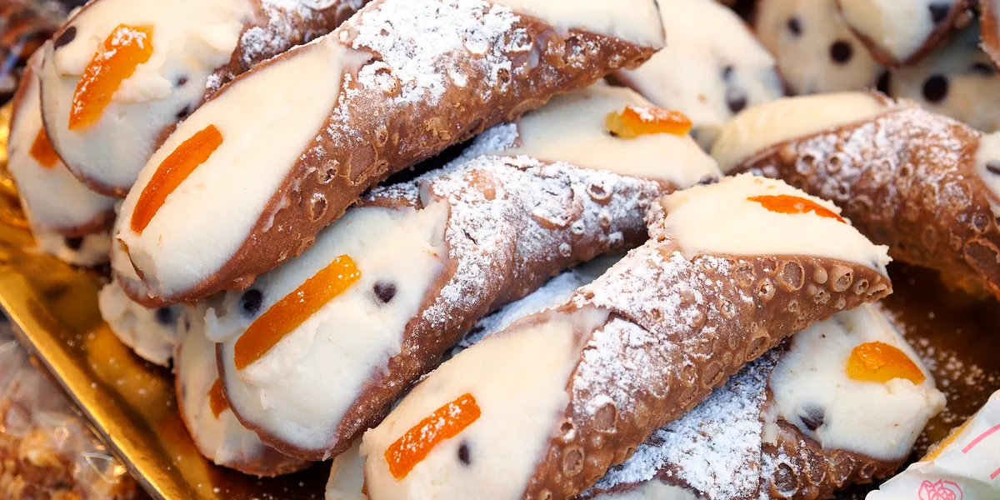

Italian cuisine
Italian cuisine has a great variety of different ingredients which are commonly used, ranging from fruits, vegetables, grains, cheeses, meats and fish. In northern Italy, fish (such as cod, or baccalà), potatoes, rice, corn (maize), sausages, pork, and different types of cheese are the most common ingredients
go to Dessert
go to How to coat Chicken parmesan
go to Shrimp
 Go to see vedio
Go to see vedio
How to cook
Chicken Parmesan
Ingredients
- 1/2 cup Italian-style bread crumbs
- 1/4 cup grated Parmesan cheese
- 1 egg
- 1 tablespoon water
- 1/4 cup all-purpose flour
- 1/3 cup vegetable oil
- 4 chicken breast cutlets, pounded to an even thickness (about 1 pound)
- 1 can (24 oz each) Hunt's® Tomato Basil Pasta Sauce, divided
- 1/2 cup shredded mozzarella cheese
- 8 ounces dry spaghetti, uncooked
- 2 tablespoons chopped fresh basil, optional
- Prepare the chicken. Place each halved chicken breast between 2 sheets of plastic wrap or in a freezer bag. Carefully flatten the chicken breasts with a rolling pin to achieve uniform thickness, about ½-inch thick. Don’t pound the breasts too hard. Pat dry each breast completely with a paper towel and season with 1 teaspoon salt. Set aside for at least 10 minutes
- Then, add garlic and sauté for another 2 minutes until fragrant. Add tomato sauce, tomato paste, Italian seasoning, parsley, and salt. Stir well to combine and bring the sauce to a simmer. Turn to low heat and let it simmer for 5 minutes. Remove from heat and transfer sauce into a bowl.
Now, let's assemble the chicken parmesan and bake. In the same skillet (or in another cast-iron skillet or casserole dish), evenly spread ½ cup of the sauce on the bottom. Place the chicken breasts spaced evenly apart over the sauce. Cover each breast with ¼ cup sauce, and top each breast with a slice of mozzarella cheese and 1 tablespoon Parmesan cheese. Sprinkle finely chopped parsley on top.
- Then, heat oil in a non stick cast-iron skillet over medium-high heat for 2 minutes until the hot oil is sizzling and shimmering. Pan fry the chicken breasts for about 4-5 minutes on each side until golden and crispy. Set aside on a plate. The chicken should be almost fully cooked and the internal temperature should reach above 155 F, as measured on a meat thermometer.
Then, prepare the tomato sauce. Remove all but 2 tablespoons of the hot oil in the skillet. Add onions and sauté for 2 minutes until soft and tender.
- Bake in a 425F preheated oven for 15-20 minutes until the cheese melts and turns golden brown. Serve with spaghetti and garnish with more parsley on top.

Shrimp
Ingredients
- 1 tablespoon vegetable oil
- 2 cups sliced bell peppers red, orange, yellow or a combination
- 2 teaspoons chili powder
- 1/2 teaspoon ground cumin
- 1/4 teaspoon onion powder
- 1/2 teaspoon smoked paprika
- 2 tablespoons chopped cilantro
- 1 pound large shrimp peeled and deveined, tails removed if desired
- lime wedges for serving optional
- flour tortillas and fajita toppings of your choice
- salt and pepper to taste
-
To make these easy and delicious Shrimp Fajitas, you will need the following ingredients (full measurements in recipe card below):
shrimp - I recommend using large white shrimp but you can feel free to use any type of shrimp that you like. I also kept the tails on when cooking, but I recommend removing the tails if you are planning to serve them with tortillas (for easy eating).
fajita seasoning - we seasoned the shrimp with a homemade fajita seasoning blend of chili powder, ground cumin, paprika, garlic powder, and dried oregano.
oil - we used avocado oil, but feel free to use any vegetable oil that you have on hand.
vegetables - I used a variety of different colored bell peppers (feel free to use any color combination that you want), along with onions and garlic. You can also add in other quick-cooking such as green beans, zucchini, or sliced mushrooms.
salt and pepper
lime juice
cilantro
tortillas - optional, if serving with tortillas. Feel free to use corn tortillas or flour tortillas.
You will also need measuring cups and spoons, mixing bowl, and large skillet.
- HOW TO MAKE THE BEST SHRIMP FAJITAS
1-Season the shrimp. In a medium mixing bowl or ziploc bag, add shrimp, chili powder, cumin, paprika, garlic powder, and oregano. Mix well until evenly coated, and set aside.
2-Sauté vegetables. Heat 1 tablespoon oil in a large skillet over medium-high heat until the hot oil sizzles, about 1 minute. Add onion, garlic, and bell peppers and cook until soft, about 3-5 minutes.
3-Cook shrimp. Add the seasoned shrimp and the remaining 1 tablespoon oil. Stir well and cook until the shrimp turn pink and is cooked through on both sides, about 4-5 minutes. Season with salt and pepper to taste. Stir in lime juice and cilantro, and mix well to combine.
4-Serve. Serve immediately with tortillas or rice, if desired.
dessert (Cannoli Shells)
Ingredients Needed to Make Cannoli Shells
- Unbleached all-purpose flour
- Granulated sugar
- Salt
- Unsalted butter
- Marsala wine
- Egg and egg white
- Vegetable oil
How to make Cannoli Shells:
First, combine the dry ingredients and mix them in a food processor. Then add the pebbles and pulse until it looks like small pebbles.
Next, add the egg and cold wine and then pulse until the dough barely begins to hold together.
Then, knead the dough on a floured surface until dough is smooth. Next, wrap in plastic and chill for 1 hour. Next, roll out the dough to ⅛ inch thick and cut into 4-inch round circles. Pull each circle into a 5-inch circle.
Next, place the egg white in a bowl and set it aside. Then, heat the oil in a pan to 350 degrees. Wrap one oval of dough loosely lengthwise around a cannoli form or 1-inch-diameter wooden dowel or cannoli form. Next, brush one end of the dough with egg white, then pull the dry end over the top and press down to seal.
Now using tongs, lower the dough into the oil and fry for about 2-3 minutes. Remove the shells with the tongs and transfer them to the paper towel-lined plate to cool.
When the shells are cool enough to touch, remove the molds and repeat with the remaining dough in batches until all shells have been fried.
Finally, dip ends of cooled shells in melted chocolate, and cool until dry.
Watch the Cannoli Video!
